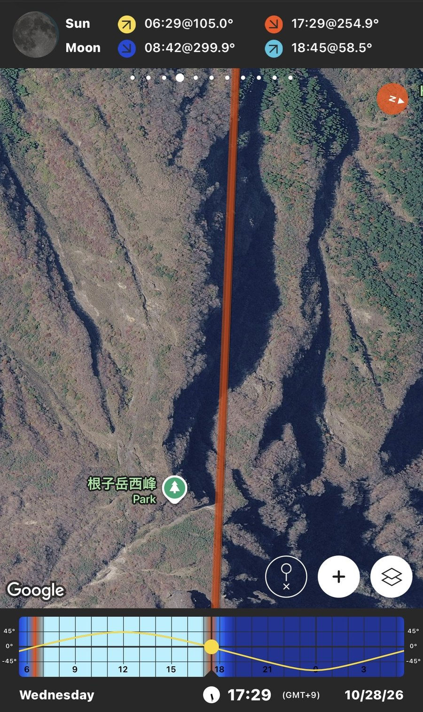
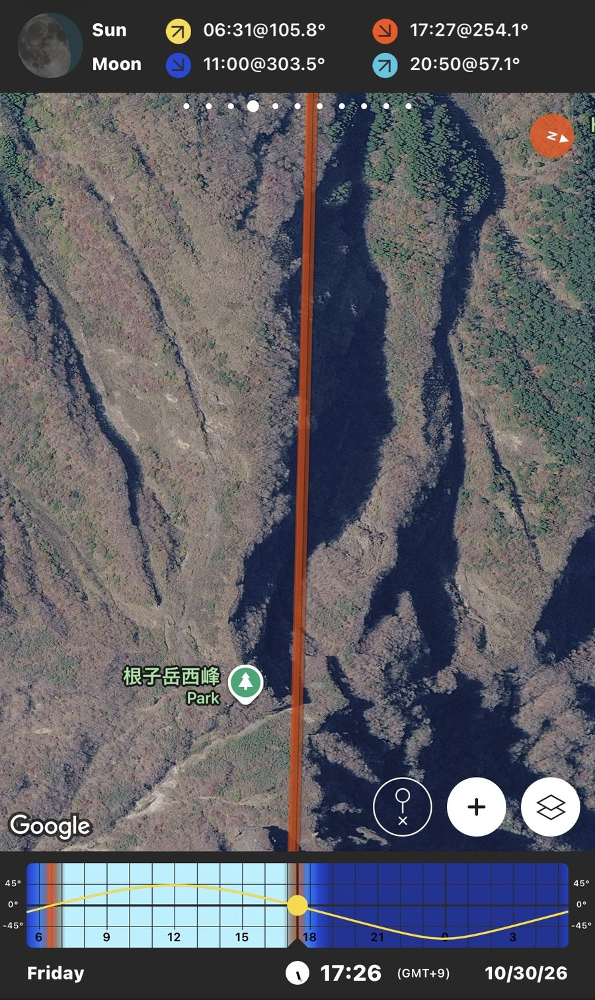
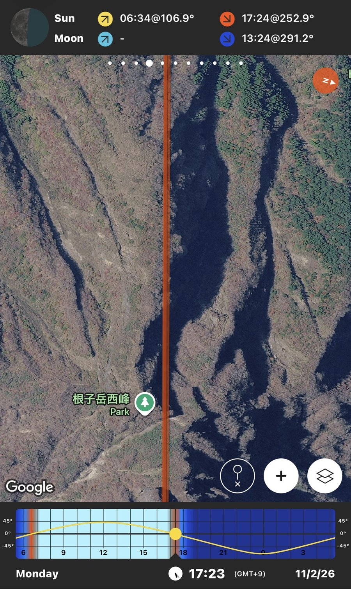
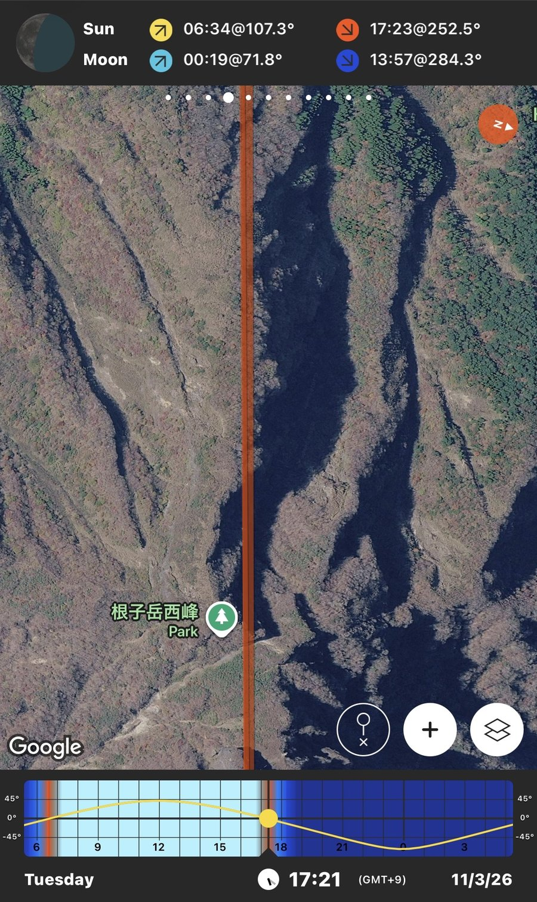
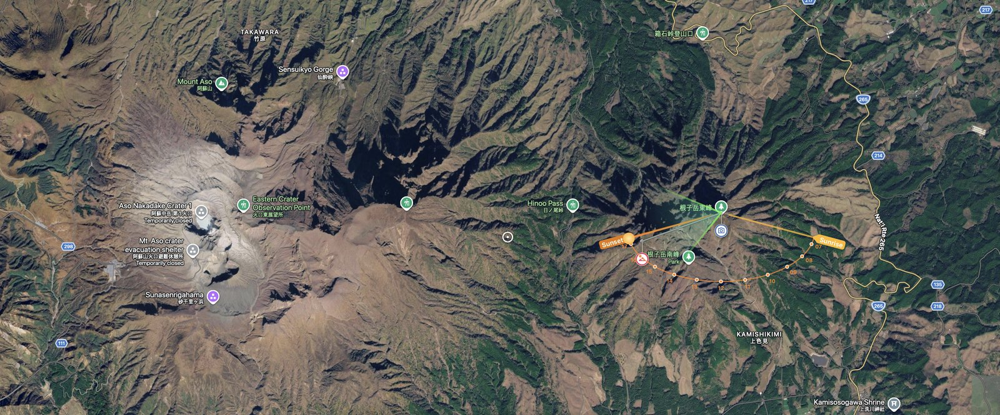
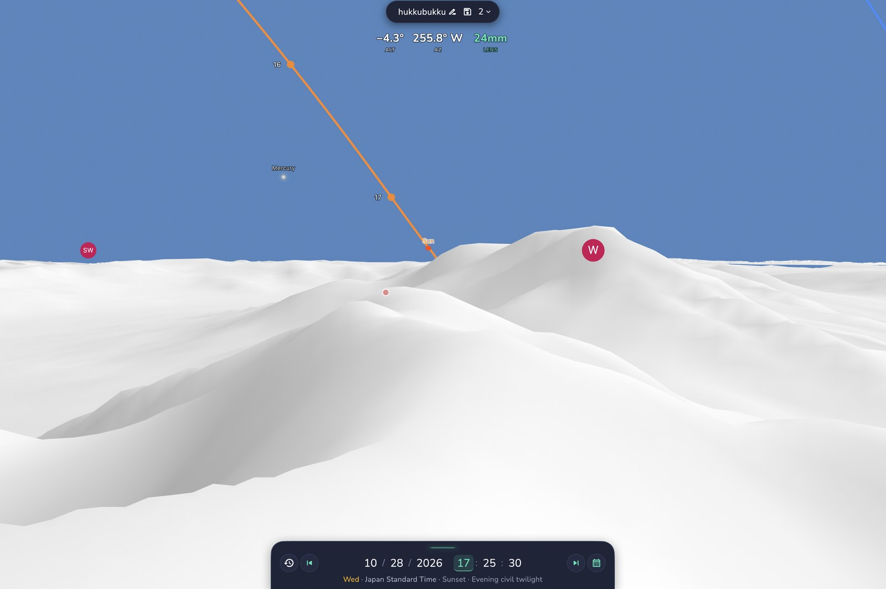

箱石峠 (Hakoishi)에서 根子岳東峰 (Nekodake East Peak)까지 오른 뒤,
西峰 (West Peak)와 中岳 (Nakadake) 사이로 해가 걸리는 구도를 노렸습니다.
구도가 유지되는 마지노선이면서 하산길에 달이 가장 밝고 가장 빨리 뜨는 날, 10월 28일로 결정.
2026년 10월 28일 17:29 · 根子岳 東峰 · 실제 촬영 결과
10월 28일부터 11월 3일까지, 매일 일몰 시각의 태양 방위를 PhotoPills로 확인했습니다. 이 구간 전체에서 해가 西峰과 中岳 화구 사이로 걸리긴 하지만, 날짜가 지날수록 방위각이 조금씩 남쪽으로 밀려 구도가 서서히 빠져나갑니다. 동시에 달뜨는 시각도 매일 더 늦어지는데 — 하산은 해가 지고 난 뒤라 이 두 가지가 같이 맞는 날이 필요했습니다.

i
i
i
i날짜를 고른 이유는 두 갈래였고, 둘 다 10월 28일을 가리켰습니다.
해가 西峰 첨봉과 中岳 화구 사이로 걸리는 구도는 10월 28일부터 날씨만 맞으면 가능했지만, 날짜가 지날수록 일몰 방위가 계절에 따라 남쪽으로 이동하며 그 창이 좁아집니다. 10월 28일은 날씨 변수를 감안했을 때 이 구도를 노릴 수 있는 사실상의 마지노선이었습니다.
箱石峠 코스는 로프·사다리 구간이 있는 급경사 능선이라, 일몰 후 어두워진 뒤 하산은 변수를 최대한 줄여야 합니다. 비교한 7일 중 10월 28일이 일몰 후 가장 빨리(76분) 달이 뜨고, 그 달도 가장 밝은(거의 보름에 가까운) 날이었습니다.
| Date | Sunset | Moonrise | Gap | Moon |
|---|---|---|---|---|
| 10/28 Wed | 17:29 @ 254.9° | 18:45 @ 58.5° | +1h16m | near-full |
| 10/29 Thu | 17:28 @ 254.5° | 19:44 @ 56.5° | +2h16m | waning gibbous |
| 10/30 Fri | 17:27 @ 254.1° | 20:50 @ 57.1° | +3h23m | waning gibbous |
| 10/31 Sat | 17:26 @ 253.7° | 22:00 @ 60.2° | +4h34m | waning |
| 11/1 Sun | 17:25 @ 253.3° | 23:11 @ 65.4° | +5h46m | waning |
| 11/2 Mon | 17:24 @ 252.9° | — (moonset 13:24) | no moon all evening | — |
| 11/3 Tue | 17:23 @ 252.5° | 00:19 @ 71.8° (that dawn) | already up, but thin | waning crescent |
Source: PhotoPills Planner, 根子岳 西峰 기준 · GMT+9
촬영 지점은 根子岳 東峰 정상입니다. 서쪽으로 뾰족하게 솟은 西峰의 바위 첨봉과, 그 너머 가스가 피어오르는 中岳 화구(阿蘇山 활화산 분화구) 사이 좁은 틈으로 해가 지는 방향을 미리 지도에서 확인했습니다. 남쪽으로는 根子岳 南峰도 가까운 지형지물로 함께 잡혔습니다.

i촬영 지점(東峰) 기준 西峰·南峰·中岳 화구 및 箱石峠登山口 상대 위치

iPlanIt Pro AR · 태양·달 경로 지평선 시뮬레이션 + 파노라마 프레임 계획(150° · 24mm · 4×2)
근자악(根子岳) 자체가 「天を衝く岩峰」(하늘을 찌르는 바위 봉우리)로 불릴 만큼 험한 산이라, 출발 전 위험 구간을 확인했습니다. 아래는 트레일헤드 안내와 실제 등반 기록을 바탕으로 정리한 내용입니다.
箱石釣井尾根 루트는 시작부터 정상까지 완만한 구간 없이 계속 오르막입니다. 로프 구간이 여러 차례 등장하고, 주의가 필요한 사다리 구간도 있습니다. 정상 직전에는 「미끄럼 주의」 표지와 함께 「이후 구간은 자기 책임」이라는 경고 표지가 서 있는 지점이 있습니다.
熊本県 등산신고서 기준으로, 화산가스 대비(수건 등 임시 마스크), 분화 징후 시 헬멧 착용, 위급 시 110 신고 등이 공통 안내사항으로 명시되어 있습니다. 中岳 분화구 인근은 화산 활동에 따라 통제될 수 있어 당일 상황을 확인해야 합니다.